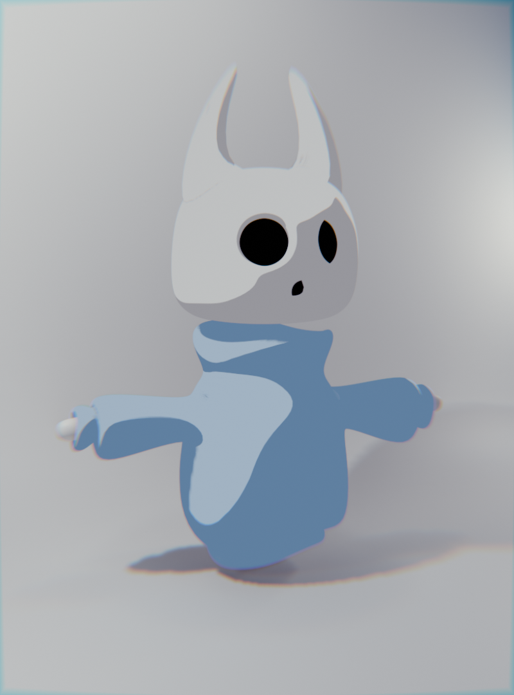

Completely inpired by the Straw Hat from One Piece! This was made in blender, with the goal of looking more 2D, I think I did ok but it could be better :b
Much credit to this video, I made most of the visuals following this it!

This was originally not cartoon but I made it like that after I made the Log Pose and Straw Hat because I really liked it.
